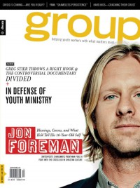

Jon Foreman
 |
| November 2009 Relevant |
 |
| November 2011 Group |
Media coverage:
- Aug 2000 in CCM "Is Christian Music Making a Difference?"
- Oct 2000 in CCM "This Land Is Your Land", by Gregory J Rumburg, Sarah Aldridge-McNeece
- Mar 2004 in CCM "Which Foot?", by Jay Swartzendruber
- Feb 2008 in CCM "New Noise: Jon Foreman", by Andrew Schwab
- Nov 2009 in Relevant "Switchfoot's Unexpected Journey", by Mark Lore, Roxanne Wieman
- Nov 2010 in HM "Poster: Jon Foreman"
- Nov 2011 in Group "Blessings, Curses, and Led Zepplin", by Scott Firestone IV
- Nov 2012 in Prism "Music Notes: Real Christian Music", by Levi Gangi
- Mar 2013 in Relevant "10: Back to the Future: 10 People Who Changed Everything", by Penny Carothers
- 15 Oct 2015 in CCM Digital "Around the World in Twenty-four Songs", by Andrew Greer
- Nov 2015 in Relevant "The Drop: Conversation: The Switchfoot Front Man Has An Ambitious New Solo Project"
- 1 Jul 2016 in CCM Digital "The Light of Darkness", by Andrew Greer
Albums & reviews:
2008: Fall
- Mar 2008 in HM, by Dan MacIntosh
- Mar 2008 in CCM, by Matt Conner
- Mar 2008 in Relevant
- Nov 2008 in Christianity Today, by Mark Moring
- Mar 2008 in HM, by Dan MacIntosh
- Mar 2008 in CCM, by Matt Conner
- Mar 2008 in Relevant
- Nov 2008 in Christianity Today, by Mark Moring
- Jul 2008 in HM, by Dan MacIntosh
- Sep 2008 in Worship Leader
- Nov 2008 in Christianity Today, by Mark Moring
- Sep 2008 in HM, by Dan MacIntosh
- Sep 2008 in Worship Leader
- Nov 2008 in Christianity Today, by Mark Moring
- Jan 2009 in Today's Christian Woman
- Jan 2009 in Discipleship Journal, by Sue Kline
- 1 Jul 2015 in CCM Digital, by Matt Conner
- 1 Aug 2015 in CCM Digital, by Kevin Sparkman
- 1 Oct 2015 in CCM Digital, by Kevin Sparkman
- 15 Oct 2015 in CCM Digital, by Matt Conner
Award Summary (Nominations / Wins)
Dove Awards- 2004 Dove Awards
- Song: "Meant To Live"
- Songwriter
- Song: "Dare You To Move"
- Song: "Meant To Live"
- Songwriter
- Male Vocalist
- Pop/Contemporary Album: Fall
- Pop/Contemporary Album: Winter
- Rock/Contemporary Album: The Wonderlands: Sunlight & Shadows
Published articles:
© 2011 CMnexus. Last updated September 2019. Contact: editor -AT- cmnexus -DØT- org About